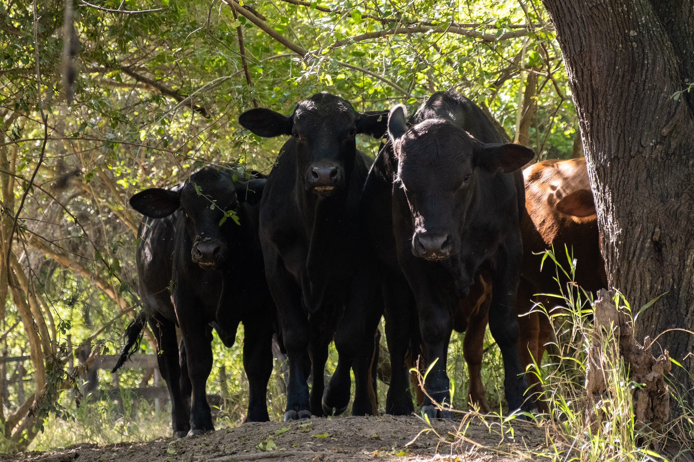
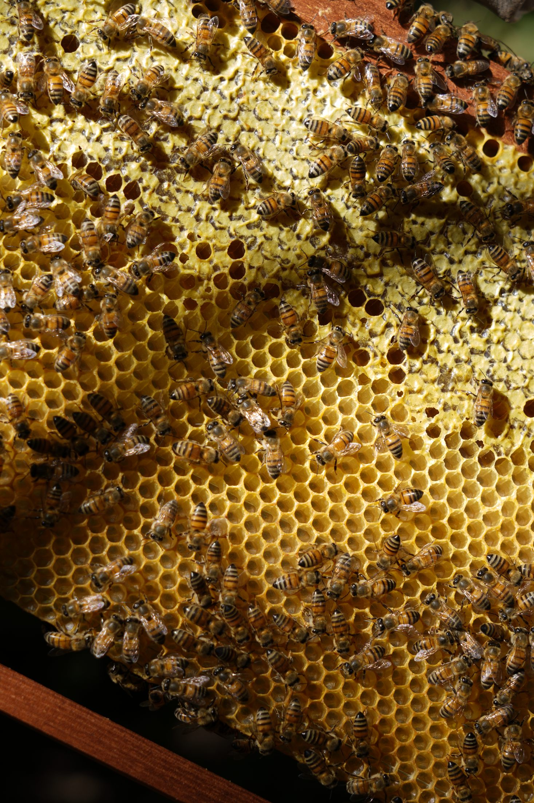
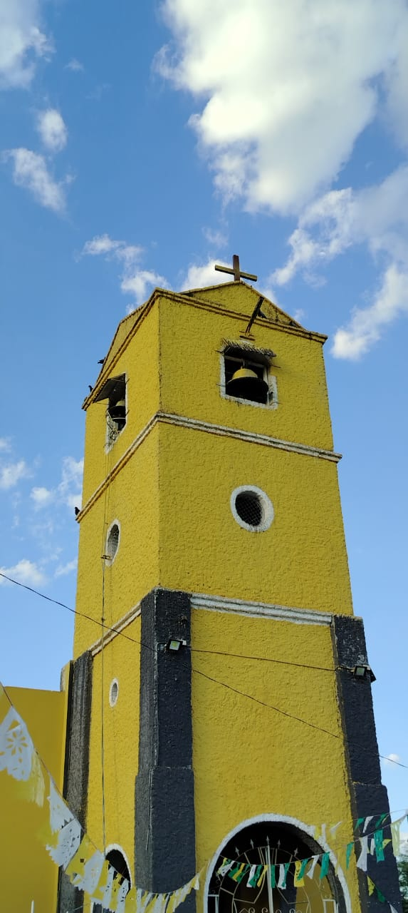

Conservación Productiva
Conservar la biodiversidad y producir de forma sostenible, a la vez: bienestar para las comunidades con ecosistemas saludables.


El modelo · Nº 01
Qué es Conservación Productiva.
El Modelo de Conservación Productiva de NATIVA integra la conservación de la biodiversidad con el desarrollo de actividades productivas sostenibles, demostrando que es posible generar bienestar para las comunidades mientras se mantienen ecosistemas saludables. Mediante el uso sostenible de los recursos naturales, el fortalecimiento de las cadenas de valor y la participación de los actores locales, impulsa economías resilientes que contribuyen a conservar los bosques, proteger la biodiversidad y fortalecer la capacidad de adaptación de los territorios y sus poblaciones frente al cambio climático.
El modelo en territorio
Conservar deja de ser un costo.
Datos de la información geográfica del territorio. Explóralos en el geoportal interactivo →
Las líneas productivas
Cuatro caminos que produce el monte.
Cada línea demuestra, a su manera, que mantener el bosque en pie genera ingresos: la ganadería, la miel, la fibra tejida y el turismo comunitario.

Ganadería bajo monte
El bosque provee forraje todo el año: una carne de bosque con identidad propia.
01
Apicultura
Las abejas producen miel en la medida en que el bosque florece.
02

Artesanías
Tejidos de palma y karawata de los pueblos Weenhayek y Guaraní.
03

Turismo comunitario
Recibir a quien quiere conocer el paisaje de la mano de las comunidades.
04